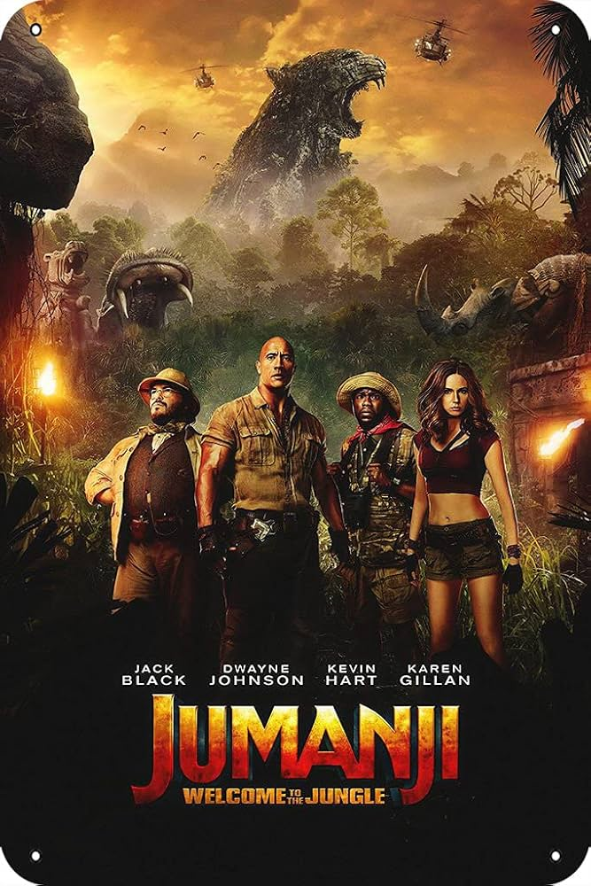

Título Original: Jumanji
Gênero: Aventura, Fantasia, Comédia
Direção: Joe Johnston (1995), Jake Kasdan (2017 e 2019)
Elenco: Robin Williams, Dwayne Johnson, Jack Black, Kevin Hart, Karen Gillan, entre outros.
Em "Jumanji", um misterioso jogo de tabuleiro prende seus jogadores em uma realidade cheia de perigos. No filme original de 1995, Alan Parrish (Robin Williams) fica preso dentro do jogo por décadas até ser libertado por duas crianças. Já nas versões modernas (2017 e 2019), um videogame leva adolescentes para dentro do mundo de Jumanji, onde vivem uma aventura selvagem em avatares inusitados.